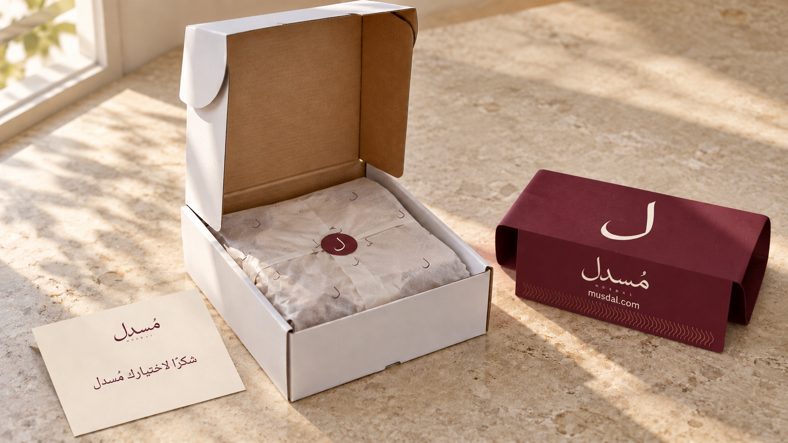
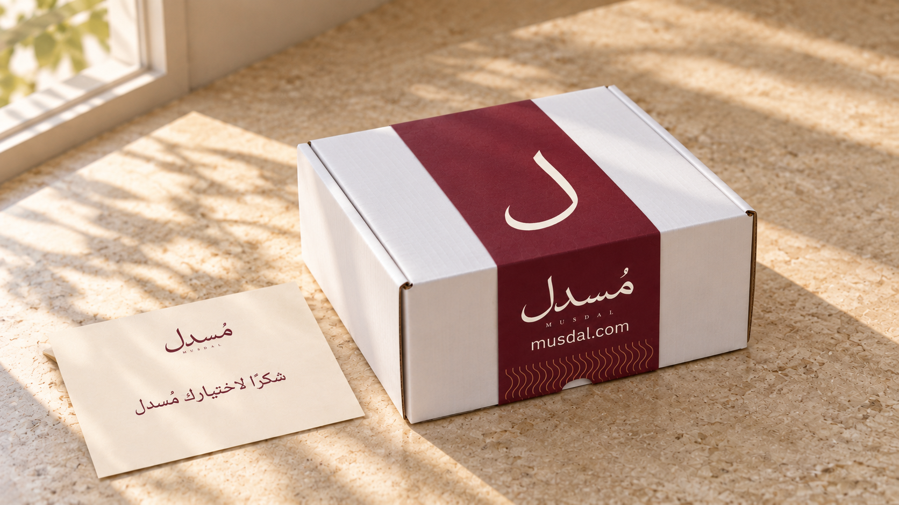
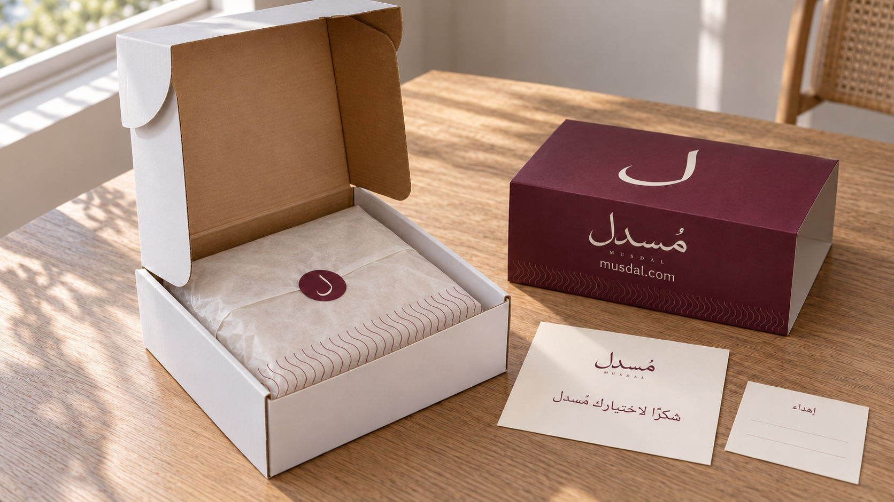
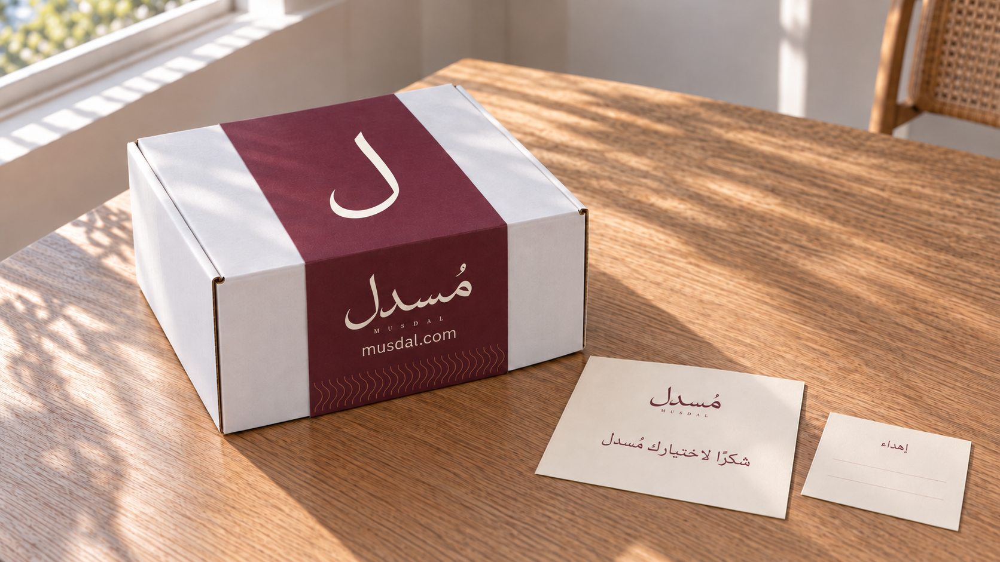
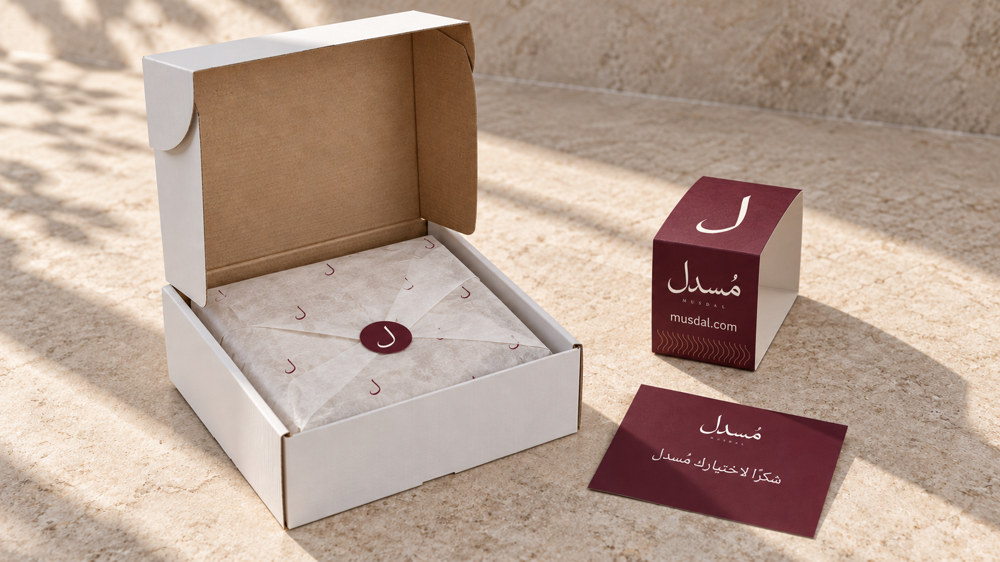
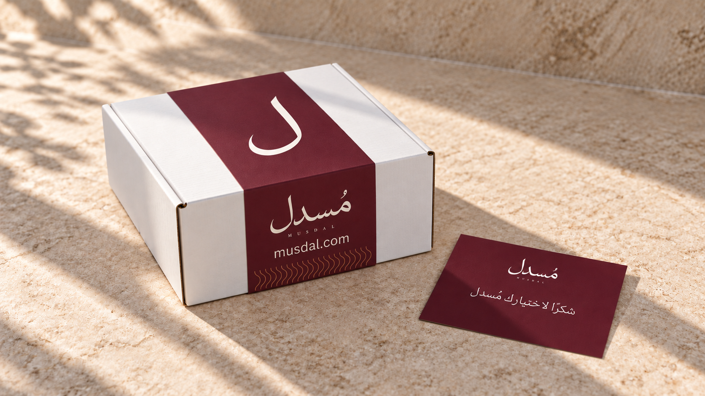

نفس الصندوق.
ثلاث تجارب للتغليف.
صندوق Falcon Pack الأبيض بغطائه المتصل وألسنته الجانبية، مع غلاف مُسدل الورقي البورغندي المعتمد. لكل خيار صورتان مستقلتان: مفتوح ومسكّر.
اللام على سطح الغلاف، والشعار الكامل وmusdal.com على وجهه العمودي، مع باترن الانسياب الهادئ. المنتج ملفوف بورقة خفيفة ومغلق بليبل اللام؛ بطاقة الشكر تحمل «شكرًا لاختيارك مُسدل».
مقاس صندوق الثياب المستهدف 30 × 30 سم حسب ترجيح المستخدم. مرجع المورد المطابق 30 × 30 × 10 سم؛ تُثبت القياسات الداخلية وارتفاع الصندوق بعينة قبل إعداد قالب السليف. مرجع صندوق 30 × 30 × 10 سم ↗
الصور الثلاث المعتمدة حاليًا ↗
اللام المتباعدة · بطاقة فاتحة
ورقة خفيفة بلام متباعدة، ليبل دائري بورغندي باللام، وبطاقة شكر أوف وايت. إضاءة صباحية على حجر فاتح.
الصندوق مفتوح


الصندوق مسكّر


حافة الباترن · لمسة إهداء
ورقة خفيفة بباترن هادئ عند الحافة، ليبل اللام، بطاقة شكر فاتحة وبطاقة إهداء صغيرة. إضاءة طبيعية على خشب فاتح.
الصندوق مفتوح


الصندوق مسكّر


اللفّة الهادئة · بطاقة بورغندي
ورقة خفيفة بلفّة قطرية وليبل اللام، وبطاقة شكر بورغندي. إضاءة عصر طبيعية على حجر فاتح.
الصندوق مفتوح


الصندوق مسكّر


المراجع والتفاصيل.
- Falcon Pack · الصندوق الذي اختاره المستخدم
قراءة 9 أكتوبر 2026: أبيض من الخارج وكرافت من الداخل، بغطاء متصل وألسنة جانبية؛ الخيار المحدد في الرابط 20 × 20 × 10 سم. ملاءمة الحجم للقطعة المطوية تُثبت بعينة فعلية. - اعتماد صندوق مُسدل والسليف · 5 أكتوبر 2026 · أصل السليف المتجهي · الشعار واللام والباليت المعتمدة.
- الصور مولّدة بأداة ImageGen للمقارنة البصرية، وليست تصويرًا لعينة مصنّعة أو ملفات طباعة. إضاءة التصوير وطابعه مستوحَيان من طلب كاميرا Sony؛ أبعاد كل ملف موضحة تحته. اسم المتجر وشعاره وفق الأصول المعتمدة، والرابط musdal.com مقدّم من المستخدم.